Hardest SuDoKuの分析 -1
フィンランドの数学者アルト・インカラ（Arto Inkala）が作成した｢世界一難しい数独｣(2012年、WHSと略記)について、検討します。
左が問題、右はその解で、唯一解です。
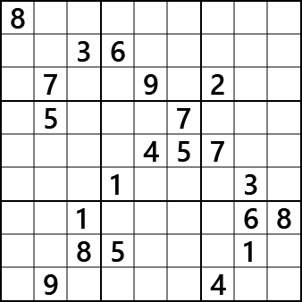
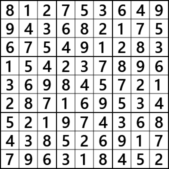
この問題を論理的なアルゴリズムで解くのは難しく、GNPX(v4)でも解けません。
一方、試行錯誤で解くのは、比較的簡単なコードで可能です。上右図の解はGNPXに含むコードで求めました。
なお、GNPXでは試行錯誤（Try and Error）は、解法アルゴリズムと認めてないの、通常の解法リストには含みません。
(1) WHSの特性
- 要素数
WHSの未確定セルの候補数字は、次のように分布しています。
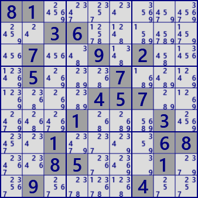
セルの候補数字の数の分布を集計すると、候補数字2のセルは1つで、数独の問題としては極めて少ない。 また、候補数字が3のセルは11であり、これらは数独の問題を解くうえでのヒントが少ないことと関連している。
候補数字の数 2 3 4 5 6 7 8 9 セル数 1 11 25 20 2 1 0 0 - 候補数字の分布
候補数字を色付け表示しました。
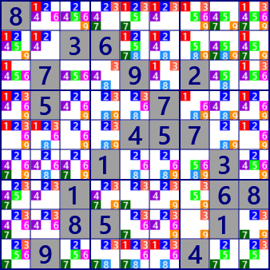
さらに、1つの数字のみを色付け表示しました。数字7がやや少ない感がしますが、どの数字も盤面全体に 広く分布して、特徴は見えません。また、どの数字でも、多くの行・列・ブロックに3以上の箇所に配置されています。 1つの行・列・ブロックに候補が2つの Strong Link は、 13リンク(r9#1,b8#1, c5#5,b2#5,r6#5,b6#5,r7#5, r6#7,b4#7,c3#7 ,c2#8,b4#8, b1#9) のみです。 Strong Link が少ないことは、問題の難しさの一要因かもしれません。
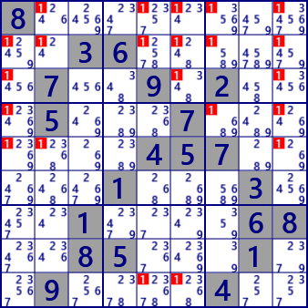 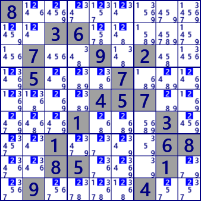 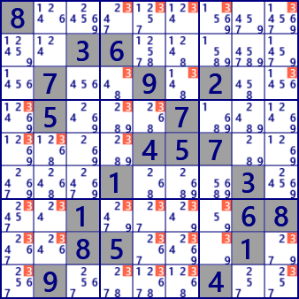 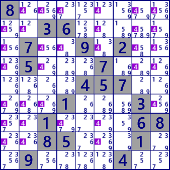 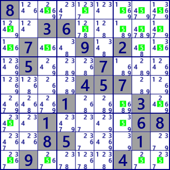 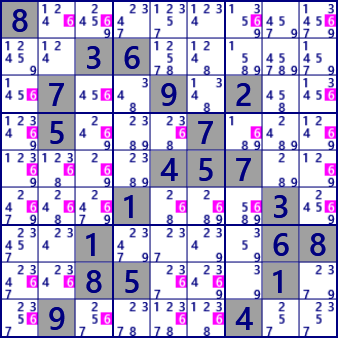 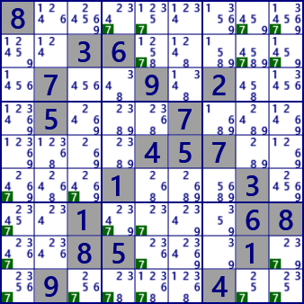 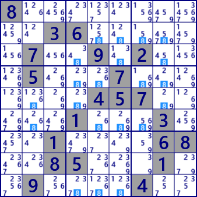 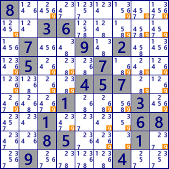
(2) WHSの変形 縮小問題
WHSは、問題の数字が21あります。これらの数字を1つ除いたら数独の問題として成立しません。
例えば、r1c1#8を空白にした問題(下図)では、これを満たす数字パターンの配列は292あります。
全ての数字パターンの配列は、WHS_dataフォルダーにあります。
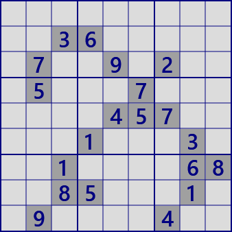
...........36......7..9.2...5...7.......457.....1...3...1....68..85...1..9....4.. solutions:292
214738659983652174675491283159367842836245791742189536521974368468523917397816425
214758693983612574675493281852367149139845726467129835521974368748536912396281457
214783659983652147675491283452367891139845726867129534521974368748536912396218475
214783659983652147675491283459367821132845796867129534521974368748536912396218475
214783659983652174675491283152937846836245791749168532521374968468529317397816425
...(6-287 omission)
985721643213654897674893251859367124132945786467182539521479368748536912396218475
985723641213654897674891253859367124132945786467182539521479368748536912396218475
985732641243651879176498253359267184812345796764189532521974368438526917697813425
985732641243651879176498253852367194319245786764189532521974368438526917697813425
985732641243651879176498253854367192319245786762189534521974368438526917697813425
他の問題数字を空白にした問題でも、多数の数字パターンがあります。その状況を図に示します。
最大のパターン数は、r6c8#3を空白にした問題で3408パターンあります。
なお、数独の問題は"唯一の解を持つ"ことが条件であり、WHSの縮小問題は数独ではありません(異なる意見があることは承知しています）。
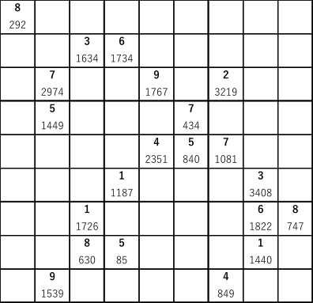
上段:問題数字
下段:パターン数（上段の数字を空白にしたときのパターン数）
(3) WHSの変形 拡大問題
WHSに解の数字を1づつ加えた問題もあります。これらはGNPX(v4)で解けるか、を調べました。WHSの空白箇所は60あり、従って60問題ができます。
このうち、8か所に数字を加えた問題(下図の赤字数字を１つづつ加えた問題）は解けます。
そのときに使われたアルゴリズムは、(Finned)Fish系,ALS系,ALS-Chain,SueDeCoqなどで普通のアルゴリズムです。
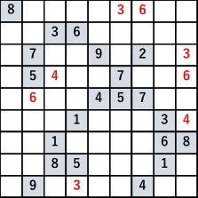
黒字は元の問題
赤字箇所を1つづつ加えた問題は、GNPXで解けます。
WHS+r1c6#3: LastDigit[20] NakedSingle[26] HiddenSingle[13] LockedCandidate[3] LockedSet(2D)Hidden[1] Finned XWing[1] ALS-XZ[3]
WHS+r1c7#6: LastDigit[21] NakedSingle[29] HiddenSingle[9] LockedCandidate[7] LockedSet(2D)[4] LockedSet(2D)Hidden[3] LockedSet(3D)[1] XWing[1] Finned XWing[4] W-Wing[1] ALS-XZ[5] ALS-XY-Wing[3]
WHS+r3c9#3: LastDigit[21] NakedSingle[26] HiddenSingle[12] LockedCandidate[8] LockedSet(2D)[3] LockedSet(2D)Hidden[3] LockedSet(3D)[1] XWing[1] Finned XWing[4] W-Wing[1] ALS-XZ[5] ALS-XY-Wing[3]
WHS+r4c3#4: LastDigit[21] NakedSingle[28] HiddenSingle[10] LockedCandidate[5] LockedSet(2D)[6] LockedSet(3D)[1] Finned XWing[2] XYChain[1] ALS-XZ[3] ALS-XY-Wing[3] ALS-Chain[2]
WHS+r4c9#6: LastDigit[20] NakedSingle[29] HiddenSingle[10] LockedCandidate[2] LockedSet(2D)[1] LockedSet(2D)Hidden[1] SueDeCoq[1] ALS-XZ[1]
WHS+r5c2#6: LastDigit[21] NakedSingle[20] HiddenSingle[18] LockedCandidate[5] LockedSet(2D)Hidden[2] XWing[1] ALS-XY-Wing[1] ALS-Chain[4]
WHS+r6c9#4: LastDigit[21] NakedSingle[29] HiddenSingle[9] LockedCandidate[5] LockedSet(2D)[6] LockedSet(3D)[1] Finned XWing[2] XYChain[1] ALS-XZ[3] ALS-XY-Wing[2] ALS-Chain[2]
WHS+r9c4#3: LastDigit[20] NakedSingle[27] HiddenSingle[12] LockedCandidate[4] LockedSet(2D)Hidden[1] Finned XWing[1] ALS-XZ[2]
([]内の数字は使った回数)
また、次の図の緑数字を1つづつ加えた問題は、GNPXではどれも解けませんでした。これらを含めて、52/60（86.7%)の問題は、解けません。
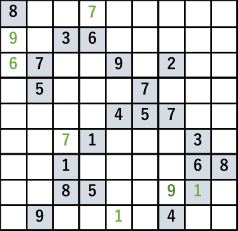
黒字は元の問題
緑字箇所を1つづつ加えた問題は、どれもGNPXでは解けない。
ちなみに、WHSに解の数字を2づつ加えた問題では、816/1770(46.1%)がGNPXで解けました。
これらの問題と適用したアルゴリズムは、データファイルにあります。（GitHubからダウンロードできます）